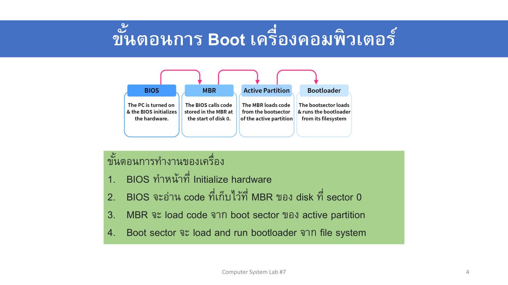
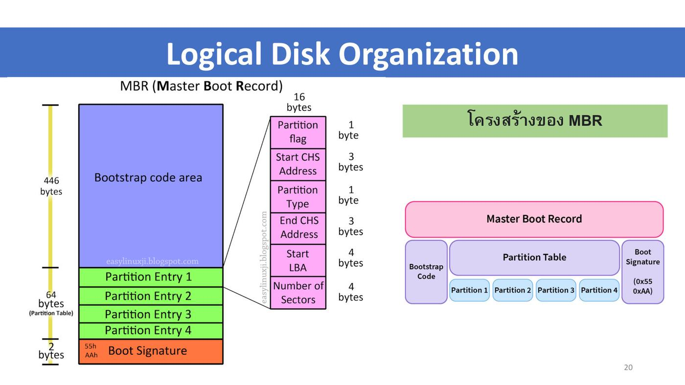
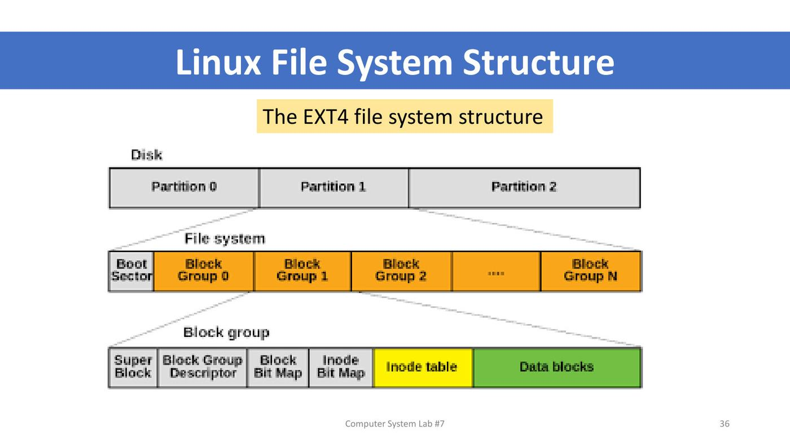
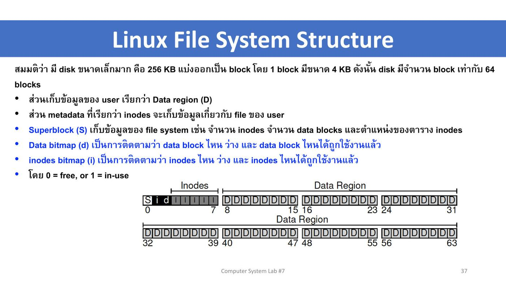
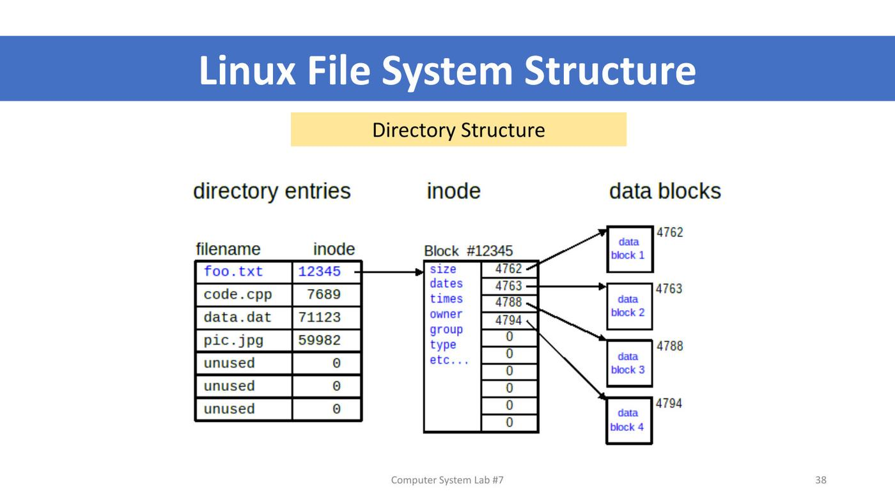
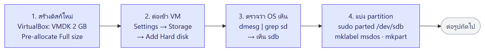
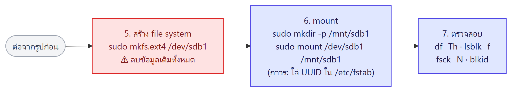

ภาพรวมบทนี้ บทนี้ตอบคำถามว่า "เปิดเครื่องแล้ว OS ถูกโหลดจากดิสก์ได้อย่างไร" และ "ดิสก์หนึ่งลูกถูกแบ่งและจัดระเบียบอย่างไร"
(1) Lecture 7 ขั้นตอน boot (BIOS/UEFI → MBR → boot sector → bootloader GRUB → kernel), โครงสร้างดิสก์ทางกายภาพ (CHS) และทางตรรกะ (LBA, partition, MBR vs GPT), ชื่ออุปกรณ์
/dev/sda, คำสั่งดูอุปกรณ์ (ls -l /dev,lsblk,fdisk -l), การสร้าง file system (mkfs), mount / umount และโครงสร้างภายในของ ext4 (superblock, bitmap, inode, data block)(2) Lab 7 เพิ่มดิสก์เสมือน 2 GB ให้ VM → แบ่ง partition ด้วย
parted→ สร้าง ext4 ด้วยmkfs→ mount และตรวจชนิด file system
ส่วนที่ 1 — Lecture 7: Storage
1. ข้อมูลรายวิชา (ย่อ)
- สัปดาห์ที่ 7 = การฝึกใช้คำสั่งเกี่ยวกับการจัดการ storage · เกณฑ์คะแนนเหมือนเดิม · ส่งแลป 23.59 น. · ทดสอบย่อยทุกสัปดาห์
2. ขั้นตอนการ Boot เครื่องคอมพิวเตอร์ ⭐⭐

| ขั้น | ใคร | ทำอะไร |
|---|---|---|
| 1 | BIOS | เปิดเครื่อง → Initialize hardware |
| 2 | BIOS → MBR | BIOS อ่าน code ที่เก็บใน MBR ของดิสก์ที่ sector 0 |
| 3 | MBR → Active Partition | MBR load code จาก boot sector ของ active partition |
| 4 | Boot sector → Bootloader | boot sector load และ run bootloader จาก file system |
💡 (อธิบายเพิ่ม) เหมือนวิ่งผลัด: ผู้วิ่งแต่ละคนรู้แค่ว่าต้องส่งไม้ให้ใครต่อ BIOS ไม่รู้จัก Linux เลย รู้แค่ว่าต้องไปอ่านดิสก์ sector แรก
3. BIOS คืออะไร ⭐
BIOS (Basic Input/Output System) = โปรแกรมขนาดเล็กบน Mainboard ทำหน้าที่ควบคุม ตั้งค่า และตรวจสอบอุปกรณ์บนเมนบอร์ด ทั้ง RAM และ hard disk (SSD, HDD) ถ้าอุปกรณ์ผิดพลาดหรือเสีย BIOS จะแจ้งทันทีตอนเปิดเครื่องด้วยเสียง Beep Code
- เป็น Firmware เฉพาะ
- ไม่ขึ้นกับ OS (OS Independent)
- มีเป้าหมายคือ find and load Boot loader
- ต้องรู้ Bootable device (อุปกรณ์ไหน boot ได้)
Functions (จากภาพ): 1. POST 2. Bootstrap Loader 3. BIOS Driver 4. BIOS Setup · Types: 1. Legacy BIOS 2. UEFI
ตัวอย่างหน้าจอ BIOS: Phoenix BIOS Setup Utility (เมนู Main, Advanced, Security, Boot, Exit — ตั้งเวลา วันที่ ดูหน่วยความจำ) และ Award CMOS Setup Utility → Advanced BIOS Features (กำหนด First/Second/Third Boot Device เช่น USB-HDD, CDROM · F10 = Save)
ขั้นตอนการทำงานของ BIOS (5 ข้อ)
- เปิดเครื่อง → BIOS ตรวจอุปกรณ์พื้นฐาน (จอ หน่วยความจำ hard disk keyboard mouse) ถ้าผิดปกติแจ้งเป็นข้อความหรือเสียง beep (กรณีจอเสีย) → ขั้นนี้เรียก Power-On Self-Test (POST)
- BIOS อ่านค่าที่ตั้งไว้เกี่ยวกับอุปกรณ์ ซึ่งเก็บใน CMOS (แก้ได้ผ่านหน้าจอ BIOS)
- BIOS เริ่มอ่าน OS ที่ติดตั้งไว้ให้ทำงาน → ขั้นนี้เรียก Bootstrap Loader
- เมื่อ OS ทำงานแล้ว BIOS สนับสนุน OS ในการใช้อุปกรณ์ให้ราบรื่นจนเลิกใช้งาน
- เมื่อปิดเครื่อง BIOS ปิดอุปกรณ์ทั้งหมด รวมถึงตัดไฟที่จ่ายให้ power supply
4. UEFI vs BIOS ⭐
UEFI = Unified Extensible Firmware Interface — ตัวแทนสมัยใหม่ของ legacy BIOS: boot เร็วกว่า, รองรับดิสก์ใหญ่กว่า, ความปลอดภัยสูงกว่า · ทั้งคู่เป็น firmware ระดับล่างที่ initialize ฮาร์ดแวร์ก่อนโหลด OS
| BIOS | UEFI | |
|---|---|---|
| หน้าจอ | Text-only | GUI และรองรับเมาส์ |
| Partition table / ขนาดดิสก์ | ใช้ MBR จำกัดดิสก์ 2.2 TB | ใช้ GPT รองรับหลาย Zettabytes (10²¹) |
| การ initialize | ทีละอย่าง (sequentially) | พร้อมกัน (in parallel) |
| โหมด | 16-bit | 32-bit หรือ 64-bit |
| ความปลอดภัย | ไม่มีในตัว | มี Secure Boot |
5. Boot Loader และขั้นตอน boot ของ Linux
- บน Linux เดิมเรียกว่า Linux Loader (LILO)
- GRUB (Grand Unified Bootloader) มาแทน LILO — หน้าที่คือเริ่ม load kernel ของ Linux เข้า memory
- หน้าจอ GRUB แสดงรายการให้เลือก เช่น
Ubuntu 8.04, kernel 2.6.24-16-generic,(recovery mode),memtest86+· ใช้ลูกศรเลือก Enter เพื่อ boot,eแก้คำสั่งก่อน boot,cเข้า command-line
ขั้นตอน boot ของ Linux (แผนภาพ)
POST → BIOS (อ่านค่าจาก CMOS) → MBR (512 bytes, sector แรก) → GRUB Stage 1 (442 bytes) → /boot → GRUB Stage 2 (/boot/grub/grub.conf) → Kernel initialised (/boot/vmlinuz…) → RAM disk image (/boot/initrd.img มี module เช่น driver) → / (ro) → init (PID=1)
จากนั้น init อ่าน /etc/inittab → sysinit (/etc/rc.d/rc.sysinit → / (rw) → /etc/fstab) → /etc/rc.d/rcX.d → /etc/rc.d/rc.local → mingetty tty1-6 (หน้าจอ login) → ถ้า runlevel 5 → /etc/X11/prefdm (GUI) · มีทางแยก single user mode และ emergency mode
💡 (อธิบายเพิ่ม) init = process แรก (PID 1) ที่ kernel สร้าง แล้วเป็น "บรรพบุรุษ" ของทุก process — ต่อยอดใน L8 · Ubuntu รุ่นใหม่ใช้ systemd แทน init แบบเดิม
6. Physical Disk Organization ⭐
- IDE hard disk ต่อกับ IDE disk controller ด้วยสายเฉพาะ · ภายใน HDD: spindle, disk, actuator, arm, read/write head, power port, data cable port (ทบทวน L1)
โครงสร้างของดิสก์ — ตำแหน่งข้อมูลระบุด้วย CHS:
| ความหมาย (อธิบายเพิ่ม) | |
|---|---|
| Cylinder | ชุดของ track ตำแหน่งเดียวกันบนทุกจาน (ซ้อนกันเป็นทรงกระบอก) |
| Head | หัวอ่าน-เขียน (1 หัวต่อ 1 ผิวจาน) |
| Sector | ส่วนย่อยของ track (ปกติ 512 bytes) |
ส่วนประกอบในภาพ: track t, sector s, cylinder c, platter, spindle, arm, arm assembly, read-write head, rotation
- ⭐ Master Boot Record อยู่ที่ cylinder 0, head 0, sector 1
⚠️ สไลด์หน้า 4 บอก MBR อยู่ "sector 0" ส่วนหน้านี้บอก "sector 1" — ไม่ขัดกัน (อธิบายเพิ่ม): แบบ CHS นับ sector เริ่มจาก 1 ส่วนแบบ LBA นับเริ่มจาก 0 จึงเป็นตำแหน่งเดียวกัน
7. Logical Disk Organization
CHS Addressing vs LBA Addressing
- CHS = ระบุด้วยเลข cylinder/head/sector
- LBA (Logical Block Addressing) = นับ block เรียงเป็นเลขเดียว 0, 1, 2, … ง่ายกว่า
- ตารางในสไลด์: LBA 0 = C0 H0 S0 · … · LBA 9 = C0 H0 S9 · LBA 10 = C0 H1 S0 · … · LBA 19 = C0 H1 S9 · LBA 20 = C1 H0 S0 · … · LBA 39 = C1 H1 S9 (ตัวอย่างสมมติ 2 head × 10 sector ต่อ track)
Logical structure vs Physical structure
- Logical: ดิสก์ถูกแบ่งเป็น Partition 1 (FAT), 2, 3, 4 (FAT32)
- Physical: Tracks (Track 0, 1), Cylinders (Cylinder 1), Sectors (Track 0 Sector 0, 1, 2)
Partition ⭐
- MBR กำหนดให้มีมากที่สุด 4 partitions · GPT กำหนดให้มีมากที่สุด 128 partitions
- แต่ละ partition ตั้งค่า file system ของตัวเอง เช่น FAT32 (Windows), NTFS (Windows), ext4 (Linux)
- ใต้ MBR: Primary Partition ได้หลายอัน และ Extended Partition หนึ่งอันที่ข้างในแบ่งเป็น Logical Partition ได้อีกหลายอัน
Disk Layout ตัวอย่าง (dual boot): MBR (GRUB Bootloader + Partition Table) | Boot Sector (W2K Bootloader) | Partition 0 (hd0,0) = Windows 2000 | Partition 1 (hd0,1) = Linux
8. MBR (Master Boot Record) ⭐⭐
MBR มีขนาด 512 bytes เก็บข้อมูลสำหรับการ boot ไว้ที่ sector แรกของดิสก์ รวมถึงกำหนดโครงสร้างดิสก์ว่ามีกี่ partition และ OS ที่ใช้ boot อยู่ที่ใด เพื่อ load OS เข้า memory

| ส่วน | ขนาด | เก็บอะไร |
|---|---|---|
| Bootstrap code area | 446 bytes | โค้ดเริ่ม boot |
| Partition Table (Partition Entry 1–4) | 64 bytes (= 4 × 16 bytes) | ข้อมูล partition 4 อัน |
| Boot Signature | 2 bytes | ค่า 0x55 0xAA บอกว่าเป็น MBR ที่ใช้ได้ |
รวม 446 + 64 + 2 = 512 bytes
Partition Entry 16 bytes แต่ละอัน:
| Field | ขนาด |
|---|---|
| Partition flag (active/boot) | 1 byte |
| Start CHS Address | 3 bytes |
| Partition Type | 1 byte |
| End CHS Address | 3 bytes |
| Start LBA | 4 bytes |
| Number of Sectors | 4 bytes |
💡 (อธิบายเพิ่ม) ทำไม MBR มี partition ได้แค่ 4 → ตารางมีที่แค่ 64 bytes = 4 entry เท่านั้น · ทำไมจำกัด 2 TB → Start LBA และ Number of Sectors ยาว 4 bytes (32 bit) → 2³² sectors × 512 bytes ≈ 2.2 TB
Windows: ดู partition table ด้วย Disk Management (Computer Management → Storage) เห็น Disk 0 แบ่งเป็น EFI System Partition 100 MB, C: NTFS, Recovery Partition, Unallocated · คลิกขวาพื้นที่ Unallocated → New Simple Volume เพื่อสร้าง partition ใหม่
9. MBR vs GPT ⭐⭐
| MBR (Master Boot Record) | GPT (GUID Partition Table) | |
|---|---|---|
| ขนาดดิสก์สูงสุด | 2 TB | 9.4 ZB |
| จำนวน partition | 4 Primary (ใช้ Extended เพื่อสร้าง logical partitions เพิ่ม) | 128 partitions |
| สถานะ | กำลังถูกแทนที่ด้วย GPT | มาแทน MBR |
| ความสัมพันธ์ | ใช้กับ BIOS | เป็นส่วนหนึ่งของ UEFI |
| ข้อจำกัด | – | OS รุ่นเก่าไม่รองรับ, อาจต้องใช้เครื่องมือใหม่/พิเศษ |
- GUID = Global Unique Identifier · UEFI กำลังแทนที่ BIOS
⚠️ ตัวเลขในสไลด์ต่างกันเล็กน้อย: หน้า UEFI บอก MBR จำกัด 2.2 TB / GPT หลาย Zettabytes ส่วนหน้านี้บอก 2 TB / 9.4 ZB — ความหมายเดียวกัน (2.2 TB ≈ 2 TiB)
10. Device Name และประเภท Device
ชื่ออุปกรณ์บน Linux: /dev/sda, /dev/sdb, … (ดิสก์ลูกที่ 1, 2, …) · partition ต่อเลขท้าย เช่น /dev/sda1, /dev/sdb2 (อธิบายเพิ่ม: SSD แบบ NVMe ใช้ชื่อ /dev/nvme0n1, partition nvme0n1p1)
ชนิดของ device 2 ประเภท (ดูจากตัวอักษรแรกของ ls -l /dev):
| ชนิด | ตัวอักษร | รับส่งข้อมูล | ตัวอย่าง |
|---|---|---|---|
| Character | c |
ทีละตัวอักษร | keyboard, mouse (ในภาพ: tty, random, pts) |
| Block | b |
ทีละบล็อก (หลายไบต์) | hard drive, DVD (ในภาพ: brw-rw---- root disk … sda, sda1) |
11. คำสั่งดูอุปกรณ์และ partition ⭐
| คำสั่ง | แสดงอะไร |
|---|---|
ls -l /dev |
รายการอุปกรณ์ทั้งหมดที่ OS รู้จัก |
ls -l /dev /dev/mapper | grep '^b' |
เฉพาะ block device (บรรทัดขึ้นต้น b) |
lsblk (list block devices) |
ข้อมูลของ storage drive ทั้งหมดและ partition เป็นแผนผังต้นไม้ |
sudo fdisk -l |
ข้อมูล partition table ของ storage ทั้งหมดที่เชื่อมต่อทางกายภาพ |
คอลัมน์ของ lsblk:
- MAJ:MIN — major-minor number ของ device
- RM — removable หรือไม่ (1 = ถอดได้)
- SIZE
- RO — read only หรือไม่
- TYPE — disk หรือ part (หรือ loop, crypt)
- MOUNTPOINTS — mount อยู่ที่ไหน
ตัวอย่างในภาพ: sda 465.8G disk มี sda1 part · nvme0n1 238.5G disk มี nvme0n1p1 1G part /boot/efi · loop0–loop15 = snap package
sudo fdisk -l แสดง: Disk /dev/nvme0n1: 238.47 GiB… · Disk model · Units: sectors of 1 × 512 = 512 bytes · Disklabel type: gpt หรือ dos (= MBR) · ตาราง Device / Start / End / Sectors / Size / Type (เช่น EFI System, Linux filesystem)
เมนูของ fdisk (โหมดโต้ตอบ sudo fdisk /dev/sdb แล้วกด m)
| กลุ่ม | คีย์ | ความหมาย |
|---|---|---|
| DOS (MBR) | a / b / c | toggle bootable flag / edit BSD disklabel / toggle dos compatibility |
| Generic | d | delete a partition |
| F / l | list free space / list partition types | |
| n | add a new partition | |
| p | print the partition table | |
| t / v / i | change partition type / verify / info | |
| Misc | m / u / x | menu / change units / extra (expert) |
| Script | I / O | load / dump sfdisk script |
| Save & Exit | w / q | write table to disk and exit / quit without saving |
| Create label | g / G / o / s | new GPT / SGI / DOS / Sun partition table |
ตัวอย่าง p ใน /dev/sdb (2.5 GiB, Disklabel type: dos): /dev/sdb1 Start 1 End 2000000 976.6M Id 83 Linux · /dev/sdb2 2000896–2002943 1M 83 Linux
12. File Systems ที่ Ubuntu รองรับ และ mkfs
- Linux filesystem types: minix, ext, ext2, ext3, ext4, Reiserfs, XFS, JFS, xia, msdos, umsdos, vfat, ntfs, proc, nfs, iso9660, hpfs, sysv, smb, ncpfs
- ดูที่ kernel รองรับตอนนี้:
cd /procแล้วmore filesystems(บรรทัดที่มีnodev= file system เสมือนไม่ผูกกับดิสก์ เช่น sysfs, tmpfs, proc)
สร้าง file system บน partition: sudo mkfs.ext4 /dev/sdb1
ผลในสไลด์: Creating filesystem with 250000 4k blocks and 62592 inodes · Filesystem UUID: … · Superblock backups stored on blocks: 32768, 98304, 163840, 229376 · Allocating group tables / Writing inode tables / Creating journal (4096 blocks) / Writing superblocks … done
⚠️ (อธิบายเพิ่ม) mkfs = format — ลบข้อมูลเดิมใน partition ทั้งหมด
13. mount / umount ⭐⭐
| คำสั่ง | ความหมาย |
|---|---|
| mount | เชื่อมต่อ partition เข้ากับระบบไฟล์ของ Linux |
| umount | ตัดการเชื่อมต่อกับระบบไฟล์ของ Linux (คล้าย safe remove USB drive บน Windows) |
- จุดที่ต่อเรียกว่า mount point (เป็น directory) · ภาพ:
/dev/hda1เป็น root มี mount point/mnt/cdromต่อกับ/dev/cdrom,/mnt/floppyต่อกับ/dev/fd0,/usrต่อกับ/dev/sda1·mount("/dev/fd0", "/mnt", 0)ทำให้ต้นไม้ของแผ่น (b) ไปห้อยใต้/mnt
| ตัวอย่าง | ความหมาย |
|---|---|
sudo mount /dev/sdb1 /media |
เชื่อม partition sdb1 (ของอุปกรณ์ sdb) ไปยัง directory media |
sudo umount /dev/sdb1 |
ตัดการเชื่อมต่อระหว่าง sdb1 กับ directory ที่ต่ออยู่ |
⚠️ คำสั่งคือ
umount(ไม่มีตัว n) ไม่ใช่ "unmount"
14. Linux vs Windows: โครงสร้างไดรฟ์ ⭐
| Windows | Linux |
|---|---|
| Physical representation of the drives and partitions — แต่ละไดรฟ์/partition เป็นต้นไม้แยก: C Drive (Windows, Program Files, Users…), D Drive (Video, Image, Dev…) | Tree structure เดียว เริ่มจาก / (root) บนสุด · devices และ logical drives ถูก mount เข้ากับ directory |
The root Directory: /bin User Binaries · /sbin System Binaries · /etc Configuration Files · /dev Device Files · /proc Process Information · /var Variable Files · /tmp Temporary Files · /usr User Programs · /home Home Directories · /boot Boot Loader Files · /lib System Libraries · /opt Optional add-on Apps · /mnt Mount Directory · /media Removable Devices · /srv Service Data
15. โครงสร้างของ Linux File System (ext4) ⭐⭐
- Linux file system = ชุดไฟล์ที่จัดโครงสร้างไว้บนดิสก์หรือ partition โดยทั่วไป ทุก partition มี file system หนึ่งอัน
- ชั้น: Kernel → Virtual File System (VFS) → EXT3 / HPFS / VFAT / EXT4 / FreeBSD → Hardware (อธิบายเพิ่ม: VFS ทำให้โปรแกรมใช้คำสั่งเดียวกันกับทุก file system)
- Types of Linux File System (ภาพต้นไม้): Ext, Ext2, Ext3, Ext4, JFS, XFS, btrFS, ReiserFS, Swap
EXT4 file system structure

Disk → Partition 0, 1, 2 → File system ของ partition = Boot Sector + Block Group 0, 1, 2, …, N → แต่ละ Block group = Super Block | Block Group Descriptor | Block Bitmap | Inode Bitmap | Inode table | Data blocks
ตัวอย่างดิสก์เล็ก 256 KB

ดิสก์ 256 KB แบ่ง block ละ 4 KB → 64 blocks (0–63)
| ส่วน | ตำแหน่ง | เก็บอะไร |
|---|---|---|
| Superblock (S) | block 0 | ข้อมูลของ file system เช่น จำนวน inodes, จำนวน data blocks, ตำแหน่งตาราง inodes |
| inode bitmap (i) | block 1 | ติดตามว่า inode ไหนว่าง / ใช้แล้ว |
| Data bitmap (d) | block 2 | ติดตามว่า data block ไหนว่าง / ใช้แล้ว |
| Inodes (I) | block 3–7 | metadata เกี่ยวกับไฟล์ของ user |
| Data region (D) | block 8–63 | ข้อมูลของ user |
- bitmap: 0 = free, 1 = in-use
💡 (อธิบายเพิ่ม) เปรียบเทียบห้องสมุด: data block = หนังสือบนชั้น · inode = บัตรรายการ (ขนาด เจ้าของ วันที่ และชั้นที่หนังสืออยู่) · bitmap = ป้ายว่าง/ไม่ว่าง ของแต่ละชั้น · superblock = สมุดข้อมูลของทั้งห้องสมุด
16. Directory กับ inode ⭐
Directory Structure

- Directory entry = ตาราง filename → หมายเลข inode เช่น
foo.txt → 12345,code.cpp → 7689,data.dat → 71123,pic.jpg → 59982, unused → 0 - Inode #12345 เก็บ size, dates, times, owner, group, type, etc. และตัวชี้ไปยัง data block (4762, 4763, 4788, 4794)
- Data blocks = เนื้อหาจริงของไฟล์ (data block 1–4 ไม่จำเป็นต้องติดกัน)
Directory Structure and inode (Figure 1): Directory Entry (Name, Inode) → Inode (Accessed Time, Size, UID, GID, Blk1, Blk2, …, Indirect Blk 1) → Blk ชี้ไป File Content โดยตรง ส่วน Indirect Blk ชี้ไปยัง block ที่เก็บ Block Addresses อีกทอดหนึ่ง (สำหรับไฟล์ใหญ่)
⚠️ (อธิบายเพิ่ม) ชื่อไฟล์ไม่ได้อยู่ใน inode แต่อยู่ใน directory entry · inode เก็บ UID/GID และเวลา — คือข้อมูลที่
ls -lแสดง (L2–L5)
inode information ด้วย df -i
$ df -i | grep sd
/dev/sda1 1310720 227605 1083115 18% /
/dev/sdb2 128 11 117 9% /mnt/sdb2
คอลัมน์: Filesystem, Inodes (ทั้งหมด), IUsed, IFree, IUse%, Mounted on
💡 (อธิบายเพิ่ม) inode หมด = สร้างไฟล์ใหม่ไม่ได้ แม้พื้นที่ยังเหลือ เช่น sdb2 ใน Lab มีแค่ 128 inodes
ส่วนที่ 2 — Lab 7: Storage
Objectives: 1. Create a new disk on Virtual Box · 2. Create a new partition on a disk · 3. Create a new file system · 4. Mount a file system · 5. Check file system type
What to Submit: แคปทุกคำสั่ง พร้อมอธิบายผล รวม PDF ชื่อ 6887xxx_lab7.pdf · ⚠️ ส่งวันนี้ก่อนเที่ยงคืน
17. ขั้นตอน Lab 7 พร้อมเฉลย


17.1 สร้างดิสก์ใหม่ใน VirtualBox (ปิด VM ก่อน)
- เลือก VM → Settings → Storage → Add Hard disk (ไอคอนข้าง Controller: SATA)
- Create → เลือก VMDK (Virtual Machine Disk) → Next
- เลือก Pre-allocate Full size → Next
- ปรับขนาดเป็น 2 GB → Finish
💡 (อธิบายเพิ่ม) ต่างจาก L1 ที่ใช้ VDI + Dynamically allocated · Pre-allocate Full size = จองพื้นที่ 2 GB เต็มทันที
17.2 ต่อดิสก์เข้า VM
- Settings → Storage → Add Hard disk
- ดูกลุ่ม "Not Attached" → เลือกดิสก์ 2 GB ที่เพิ่งสร้าง (เช่น
ubuntu20_04_3.vmdk) → Choose - จะเห็น SATA 2 port (ดิสก์เดิม .vdi + ดิสก์ใหม่ .vmdk) → กด Start
17.3 ตรวจว่า OS เห็นดิสก์
dmesg | grep sd → เห็น sd 2:0:0:0: [sda] 104857600 512-byte logical blocks: (53.7 GB/50.0 GiB) และ sd 3:0:0:0: [sdb] 4194304 512-byte logical blocks: (2.15 GB/2.00 GiB) → ดิสก์ใหม่คือ sdb
(อธิบายเพิ่ม: dmesg = ข้อความจาก kernel ตอน boot)
17.4 ติดตั้งเครื่องมือแบ่ง partition
sudo apt install gparted — ⚠️ ต้องตั้ง proxy ใน /etc/apt/apt.conf ก่อน (เหมือน L6)
17.5 ดู partition — เฉลยคำถาม
sudo parted -l
Disk /dev/sda: 53.7GB Partition Table: msdos
Number Start End Size Type File system Flags
1 1049kB 538MB 537MB primary fat32 boot
2 539MB 53.7GB 53.1GB extended
5 539MB 53.7GB 53.1GB logical ext4
Error: /dev/sdb: unrecognised disk label
Disk /dev/sdb: 2147MB Partition Table: unknown
| คำถาม | คำตอบ |
|---|---|
| sda มีกี่ partition? | 3 partition: #1 primary fat32 (boot, 537 MB), #2 extended, #5 logical ext4 (53.1 GB) · (ถ้านับเฉพาะที่เก็บข้อมูลจริงคือ 2 — #2 เป็นแค่กล่องที่ครอบ #5) |
| sdb มีปัญหาอะไร? | ยังไม่มี partition table (disk label) — unrecognised disk label, Partition Table: unknown เพราะเป็นดิสก์ใหม่เปล่า ต้อง mklabel ก่อนสร้าง partition |
💡 logical partition เริ่มเลข 5 เสมอ เพราะเลข 1–4 สงวนไว้ให้ primary/extended ของ MBR
sudo fdisk -l | grep sd → /dev/sda1 * … 512M b W95 FAT32 · /dev/sda2 … 49.5G 5 Extended · /dev/sda5 … 49.5G 83 Linux · Disk /dev/sdb: 2 GiB (ไม่มีรายการ partition)
เทียบกับ sudo fdisk -l (ไม่ grep): แสดงรายละเอียดครบทุกดิสก์ รวม loop device, disk model, units, sector size, disklabel type, disk identifier · ส่วน | grep sd กรองเหลือเฉพาะบรรทัดที่มีคำว่า sd ให้อ่านง่าย
17.6 สร้าง partition ด้วย parted
sudo parted /dev/sdb → ได้ prompt (parted)
| ขั้น | คำสั่ง | ผล |
|---|---|---|
| 1 | mklabel msdos |
สร้าง partition table แบบ MBR (msdos) · เตือนว่าข้อมูลเดิมจะหาย → ตอบ Y |
| 2 | mkpart primary ext4 0 1024 |
สร้าง partition ที่ 1 ตั้งแต่ 0 ถึง 1024 MB · เตือน not properly aligned for best performance → ตอบ I (Ignore) |
| 3 | print |
1 512B 1024MB 1024MB primary ext4 lba |
| 4 | mkpart primary ext4 1.0GB 1.0GB |
สร้าง partition ที่ 2 |
| 5 | print |
เพิ่ม 2 1024MB 1026MB 1049kB primary ext4 lba |
| 6 | quit |
ออกจาก parted |
⚠️ (อธิบายเพิ่ม) partition 2 ได้ขนาดแค่ 1049 kB (~1 MB) เพราะสั่งจุดเริ่มกับจุดจบเท่ากัน (1.0GB) parted จึงปัดให้เล็กที่สุด · คอลัมน์ "ext4" ใน parted เป็นแค่ป้ายชนิด ยังไม่ได้ format จริง ต้อง
mkfsก่อน
ตรวจ: sudo fdisk -l | grep sd → /dev/sdb1 1 2000000 2000000 976.6M 83 Linux · /dev/sdb2 2000896 2002943 2048 1M 83 Linux
17.7 สร้าง file system ด้วย mkfs
| คำสั่ง | ผล |
|---|---|
sudo mkfs.ext4 /dev/sdb1 |
Creating filesystem with 250000 4k blocks and 62592 inodes · UUID a510ea07-0463-4d66-a2dd-dc878c91e41e · superblock backups · journal 4096 blocks → sdb1 เป็น ext4 แล้ว |
sudo mkfs.ext4 /dev/sdb2 |
Filesystem too small for a journal · 256 4k blocks and 128 inodes (ไม่มี journal เพราะเล็กเกิน) |
⚠️ WARNING!!! mkfs ลบข้อมูลในอุปกรณ์ทั้งหมด ต้องแน่ใจว่าชื่ออุปกรณ์ถูกต้อง (สั่งผิดเป็น
/dev/sda1= ระบบพัง)
17.8 Mount
- สร้าง directory ว่างสำหรับ mount:
sudo mkdir -p /mnt/sdb1และsudo mkdir -p /mnt/sdb2(-p= สร้าง directory แม่ให้ด้วยถ้ายังไม่มี และไม่ error ถ้ามีอยู่แล้ว) - ดู UUID:
sudo blkid /dev/sdb1→UUID="a510ea07-0463-4d66-a2dd-dc878c91e41e" TYPE="ext4" PARTUUID="52650c92-01"· ทำซ้ำกับ sdb2 - สำรอง fstab ก่อนแก้:
sudo cp -v /etc/fstab /etc/fstab.backup - ใช้ nano เพิ่ม 2 บรรทัดใน
/etc/fstab· รูปแบบ:<file system> <mount point> <type> <options> <dump> <pass>(แนวคำตอบ):
(ในไฟล์เดิมมีตัวอย่าง:UUID=a510ea07-0463-4d66-a2dd-dc878c91e41e /mnt/sdb1 ext4 defaults 0 2 UUID=<UUID ของ sdb2> /mnt/sdb2 ext4 defaults 0 2UUID=9ea8b0d5-… / ext4 errors=remount-ro 0 1·UUID=1D68-5BDF /boot/efi vfat umask=0077 0 1·/swapfile none swap sw 0 0) - mount ทันที:
sudo mount /dev/sdb1 /mnt/sdb1และsudo mount /dev/sdb2 /mnt/sdb2
เฉลย: UUID คืออะไร ใช้อย่างไรในการ mount
- UUID = Universally Unique Identifier — ตัวเลข 128-bit เขียนเป็น 36 ตัวอักษร (เลขฐานสิบหก 32 ตัว + ขีด 4 ตัว) รูปแบบ 8-4-4-4-12 เช่น
a9e86162-d472-11e8-b36c-ccaf789d94a0(ส่วนต่าง ๆ: time_low, time_mid, time_hi_and_version, clock_seq, node) · ใช้ระบุข้อมูลให้ไม่ซ้ำ เช่น ระบุแต่ละแถวในตารางฐานข้อมูล - ใช้ในการ mount (แนวคำตอบ):
mkfsสร้าง UUID เฉพาะให้แต่ละ file system แล้วใน/etc/fstabเขียนUUID=…แทน/dev/sdb1เพราะชื่อ /dev/sdX เปลี่ยนได้เมื่อเพิ่ม/ถอด/สลับลำดับดิสก์ แต่ UUID ไม่เปลี่ยน ตอน boot ระบบจึง mount partition ที่ถูกต้องเสมอ (ในไฟล์ fstab เองก็เขียนว่า "UUID= … a more robust way to name devices that works even if disks are added and removed")
17.9 ตรวจชนิด file system
| คำสั่ง | ผล | ความหมาย |
|---|---|---|
df -Th | grep sd |
/dev/sda5 ext4 49G … / · /dev/sda1 vfat 511M … /boot/efi · /dev/sdb1 ext4 943M 24K 878M 1% /mnt/sdb1 · /dev/sdb2 ext4 992K 24K 900K 3% /mnt/sdb2 |
-T แสดงชนิด file system, -h ขนาดอ่านง่าย · ยืนยันว่า mount แล้ว |
fsck -N /dev/sdb1 |
[/usr/sbin/fsck.ext2 (1) -- /dev/sdb1] fsck.ext2 /dev/sdb1 |
-N = แสดงว่าจะรันอะไรโดยไม่ตรวจจริง · บอกว่าจะใช้ตัวตรวจตระกูล ext (fsck.ext2 ใช้ร่วมกับ ext2/3/4) |
lsblk -f | grep sd |
sda1 vfat 1D68-5BDF 511M /boot/efi · sda5 ext4 9ea8… 35.2G 22% / · sdb1 ext4 a510ea07-… 878M 0% /mnt/sdb1 · sdb2 ext4 a5e1bcf5-… 900K 2% /mnt/sdb2 |
-f แสดง FSTYPE, UUID, พื้นที่ว่าง, mount point ครบในที่เดียว |
💡 (อธิบายเพิ่ม) fsck (file system check) ใช้ตรวจ/ซ่อม file system — ห้ามรันซ่อมกับ partition ที่ mount อยู่ ·
-Nจึงปลอดภัยเพราะไม่ทำจริง
คำศัพท์สำคัญ
| คำศัพท์ | ความหมาย | จำง่าย ๆ ว่า |
|---|---|---|
| BIOS | Basic Input/Output System firmware บนเมนบอร์ด initialize hardware และหา bootloader | ผู้ปลุกเครื่อง |
| POST | Power-On Self-Test ตรวจอุปกรณ์ตอนเปิดเครื่อง | ตรวจร่างกาย |
| CMOS | ที่เก็บค่าตั้งของ BIOS | สมุดตั้งค่า |
| Beep code | เสียงแจ้งข้อผิดพลาดของ BIOS | เสียงเตือน |
| UEFI | ตัวแทน BIOS: GUI, GPT, parallel, 32/64-bit, Secure Boot | BIOS รุ่นใหม่ |
| Bootloader (LILO / GRUB) | โหลด kernel เข้า memory | คนขับรถพา OS เข้าบ้าน |
| init | process แรก PID 1 | บรรพบุรุษ |
| CHS | Cylinder-Head-Sector ระบุตำแหน่งทางกายภาพ | พิกัดสามมิติ |
| LBA | Logical Block Addressing นับ block เป็นเลขเดียว | เลขที่บ้าน |
| Partition | ส่วนที่แบ่งของดิสก์ แต่ละส่วนมี file system | ห้องในบ้าน |
| Primary / Extended / Logical | partition หลัก / กล่องครอบ / partition ย่อยในกล่อง | ห้อง / ห้องโถง / ห้องย่อย |
| MBR | 512 bytes = 446 bootstrap + 64 partition table + 2 signature (0x55AA) | ป้ายหน้าบ้าน |
| GPT / GUID | GUID Partition Table (128 partitions, 9.4 ZB) ส่วนหนึ่งของ UEFI | ตาราง partition รุ่นใหม่ |
/dev/sda, /dev/sdb1 |
ชื่อดิสก์ / partition บน Linux | ชื่อเรียกดิสก์ |
| Character / Block device | รับส่งทีละตัวอักษร (c) / ทีละบล็อก (b) | คีย์บอร์ด / ดิสก์ |
lsblk |
แสดง block device และ partition | ผังดิสก์ |
fdisk -l / parted -l |
แสดง partition table | ดูตาราง partition |
mkfs.ext4 |
สร้าง file system (format) | ฟอร์แมต |
| mount / umount | เชื่อม / ตัด partition กับ directory | เสียบ / ถอดอย่างปลอดภัย |
| Mount point | directory ที่ partition ถูกต่อเข้า | ประตูเข้าดิสก์ |
/etc/fstab |
รายการ file system ที่ mount อัตโนมัติตอน boot | ตารางเสียบถาวร |
| UUID | 128-bit, 8-4-4-4-12 ระบุ file system ไม่ซ้ำ | เลขบัตรประชาชนของ partition |
| VFS | Virtual File System ชั้นกลางระหว่าง kernel กับ file system จริง | ล่ามกลาง |
| Superblock | ข้อมูลของทั้ง file system | สมุดข้อมูลห้องสมุด |
| inode | metadata ของไฟล์ (size, time, owner, group, type, ตัวชี้ block) | บัตรรายการหนังสือ |
| Data bitmap / inode bitmap | ติดตามว่า block/inode ไหนว่าง (0 free, 1 in-use) | ป้ายว่าง/ไม่ว่าง |
| Directory entry | ชื่อไฟล์ → หมายเลข inode | สารบัญ |
df -i / df -Th |
ดูการใช้ inode / ชนิดและพื้นที่ file system | ดูความจุ |
blkid, dmesg, fsck -N |
ดู UUID+type / ข้อความ kernel / ตรวจ fs แบบไม่ทำจริง | เครื่องมือตรวจ |
สรุปท้ายบท / จุดที่มักออกสอบ
เรื่องที่ต้องจำ
- Boot: BIOS (initialize hardware) → MBR (sector 0) → boot sector ของ active partition → bootloader จาก file system
- BIOS: firmware, OS independent, find & load bootloader, ต้องรู้ bootable device · ขั้นตอน POST → อ่านค่าจาก CMOS → Bootstrap Loader → สนับสนุน OS → ปิดอุปกรณ์
- UEFI vs BIOS: GUI vs text · GPT vs MBR (2.2 TB) · parallel vs sequential · 32/64-bit vs 16-bit · Secure Boot
- GRUB มาแทน LILO โหลด kernel เข้า memory
- CHS = Cylinder, Head, Sector · MBR อยู่ C0 H0 S1
- MBR = 512 bytes = 446 + 64 (4×16) + 2 (0x55AA) · 4 primary (extended → logical)
- GPT = 128 partitions, 9.4 ZB, ส่วนหนึ่งของ UEFI
/dev/sda,/dev/sdb· device c (keyboard, mouse) vs b (hard drive, DVD)lsblkคอลัมน์ MAJ:MIN, RM, RO, TYPE (disk/part), MOUNTPOINTSsudo fdisk -l· fdisk: n เพิ่ม, d ลบ, p แสดง, w บันทึกออก, q ออกไม่บันทึกsudo mkfs.ext4 /dev/sdb1·sudo mount /dev/sdb1 /media·sudo umount /dev/sdb1- Windows = แยกไดรฟ์ C, D · Linux = ต้นไม้เดียวจาก
/และ mount อุปกรณ์เข้ากับ directory - ext4: Boot sector + Block groups → Super Block, Group Descriptor, Block Bitmap, Inode Bitmap, Inode table, Data blocks
- ดิสก์ 256 KB / 4 KB = 64 blocks · S, i, d, inodes (3–7), Data (8–63) · 0 = free, 1 = in-use
- Lab: sdb = 2 GB VMDK · sda มี 3 partition (1 primary, 2 extended, 5 logical) · sdb ไม่มี disk label · sdb1 ≈ 976 MB, sdb2 ≈ 1 MB (too small for a journal, 128 inodes) · UUID ใน fstab · ส่ง
6887xxx_lab7.pdf
คู่ที่มักสับสน
| คู่ | ต่างกันที่ |
|---|---|
| BIOS vs UEFI | เก่า text MBR 16-bit vs ใหม่ GUI GPT 32/64-bit Secure Boot |
| MBR vs GPT | 4 partitions / 2 TB vs 128 partitions / 9.4 ZB |
| LILO vs GRUB | bootloader เก่า vs ตัวที่มาแทน |
| CHS vs LBA | ระบุด้วย cylinder/head/sector vs นับ block เป็นเลขเดียว (sector CHS เริ่ม 1, LBA เริ่ม 0) |
| Primary vs Extended vs Logical | partition หลัก vs กล่องครอบ vs partition ในกล่อง (เลข 5 ขึ้นไป) |
| Character vs Block device | ทีละตัวอักษร (c) vs ทีละบล็อก (b) |
fdisk vs parted |
เมนูตัวอักษร (n, p, w) vs คำสั่งเต็ม (mklabel, mkpart, print) |
| partition vs file system | การแบ่งพื้นที่ vs การจัดระเบียบข้อมูลในพื้นที่นั้น (ต้อง mkfs) |
| mount vs umount | เชื่อมต่อ vs ตัดการเชื่อมต่อ |
/dev/sdb1 vs UUID ใน fstab |
ชื่อที่เปลี่ยนได้ vs ตัวระบุถาวร |
| inode vs data block | metadata + ตัวชี้ vs เนื้อหาจริง |
| Data bitmap vs inode bitmap | ติดตาม data block ว่าง vs ติดตาม inode ว่าง |
| Superblock vs inode | ข้อมูลทั้ง file system vs ข้อมูลไฟล์เดียว |
df -h vs df -i |
พื้นที่ vs จำนวน inode |
| VDI + Dynamic (L1) vs VMDK + Pre-allocate (L7) | ดิสก์ OS หลัก vs ดิสก์ทดลองเพิ่ม |
แนวคิดที่ต้องอธิบายได้
- ทำไม MBR มีได้แค่ 4 partition และ 2 TB → partition table 64 bytes = 4 entry, ที่อยู่ 32 bit × 512 bytes ≈ 2.2 TB
- ทำไม sdb ขึ้น unrecognised disk label → ดิสก์ใหม่ยังไม่มี partition table ต้อง
mklabelก่อน - ทำไมหลังสร้าง partition แล้วยังใช้เก็บไฟล์ไม่ได้ → ยังไม่มี file system ต้อง
mkfsและยังไม่ได้ mount เข้ากับ directory - ทำไม fstab ควรใช้ UUID → ชื่อ /dev/sdX เปลี่ยนตามลำดับการเสียบดิสก์ UUID ไม่เปลี่ยน
- ทำไมชื่อไฟล์ไม่อยู่ใน inode → ชื่ออยู่ใน directory entry ที่ชี้ไป inode ทำให้ไฟล์เดียวมีหลายชื่อ (link) ได้